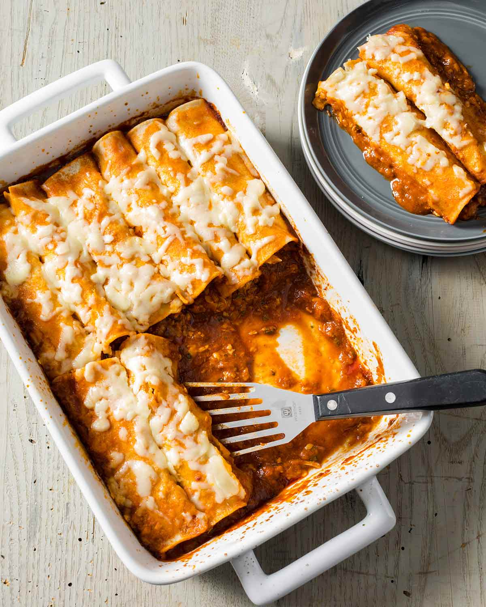

Chicken Tortilla Rolls

Description
These are very tasty Cheesy Chicken Tortilla Rolls. They are reminiscent of enchiladas, but slightly different. You can substitue the chicken for turkey if you wish.
Part 1
Ingredients
- 10 flour tortilla shells
- 3 cups chicken breast - cooked and shredded
- 1 small onion - chopped
- 1 cup shredded Chedder cheese
Steps
- Spray 9"x13" baking dish with cooking spray
- Mix chicken breast, onion, and cheese in a bowl
- Place equal amounts of above mixture into 10 flour tortilla shells
- Roll and place in the baking dish
Part 2
Ingredients
- 2 cans cream of chicken soup
- 1 cup sour cream
- 1 small can chopped green chilies
Steps
- Mix these ingredients and pour over tortilla shells
- Top with desired amount of shredded chedder cheese
- Bake at 350 degrees Farenheight for 35-40 minutes till bubbly